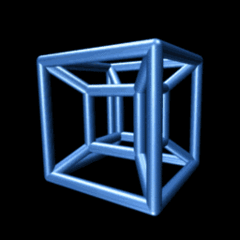

<html> <head> <script type="text/javascript"> function okno_zamknij_maszk() { window.close() } </script> </head> <body> <ul><p style="font-size:0.5cm;"><b>Teoria:</b></p> <b>A)Uwagi na temat JS:<br></b> <li> w 1995 roku</li> <li>JavaScript to obiektowy język skryptowy.</li> <li>JS zawsze jest wykonywana po stronie przeglądarki. Node. js, o którym wspomniał 0ceanborn, to jest JavaScript wykonywany po stronie serwera.</li> <li>js, podobnie jak inne języki i środowiska, jest bezpieczny, gdy projekty w nim budowane są traktowane z odpowiednią dbałością i zastosowaniem najlepszych praktyk.</li> <li>JavaScript to obiektowy język skryptowy. Aplikacje w języku Java działają w maszynie wirtualnej lub w przeglądarce, a kod JavaScript jest uruchamiany wyłącznie w przeglądarkach. Kod języka Java wymaga skompilowania, a kod JavaScript pozostaje w formie tekstu.</li> </ul> B)‹input type="button" name="przycisk" value="Nowa Strona" onclick="WinOpen(' ')"›<br> <b>Wytłumaczenie:</b> Skrypt otwiera okno. ‹window.open("obraz.html","okienko","toolbar=no,directories=no,menubar=no,height=280,width=160,top=200,left=200")›<br> <b>Wytłumaczenie:</b> Skrypt otwiera okno w ustalonych granicach. <p>-----------------------------------------------------------</p> <p><b>Toolbar=no</b> →ukrywa standardowy pasek narzędzi.</p> <p><b>directories=no</b> →ukrywa przyciski katalogów.</p> <p><b>menubar=no</b> → ukrywa menu przeglądarki.</p> <p><b>height=280</b> → ustawia wysokość okna na 280.</p> <p><b>width=160</b> →ustawia szerokość okna na 160.</p> <p><b>top=200</b> →ustawia położenie okna względem góry ekranu na 200.</p> <p><b>left=200</b> →ustawia położenie okna względem lewej strony ekranu.</p> <p></p> <input type="button" value="zamknij okno" onclick="okno_zamknij_maszk()"/> </body> </html>